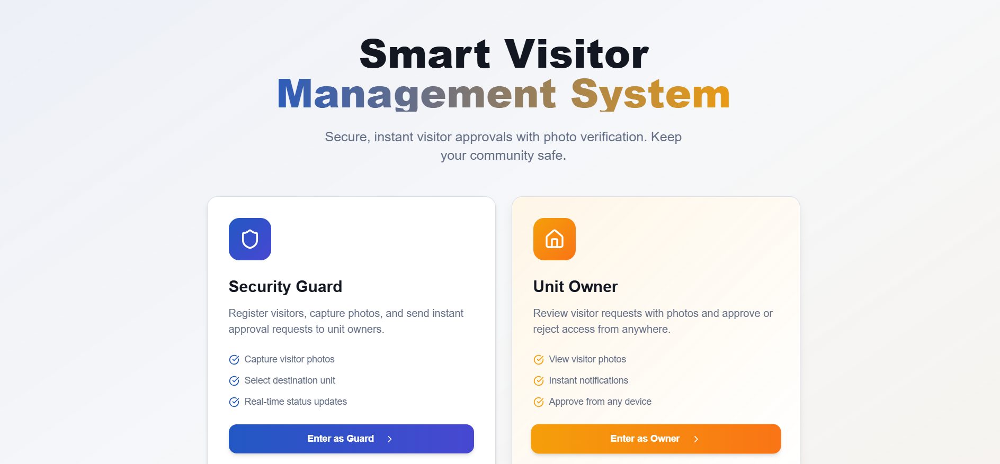
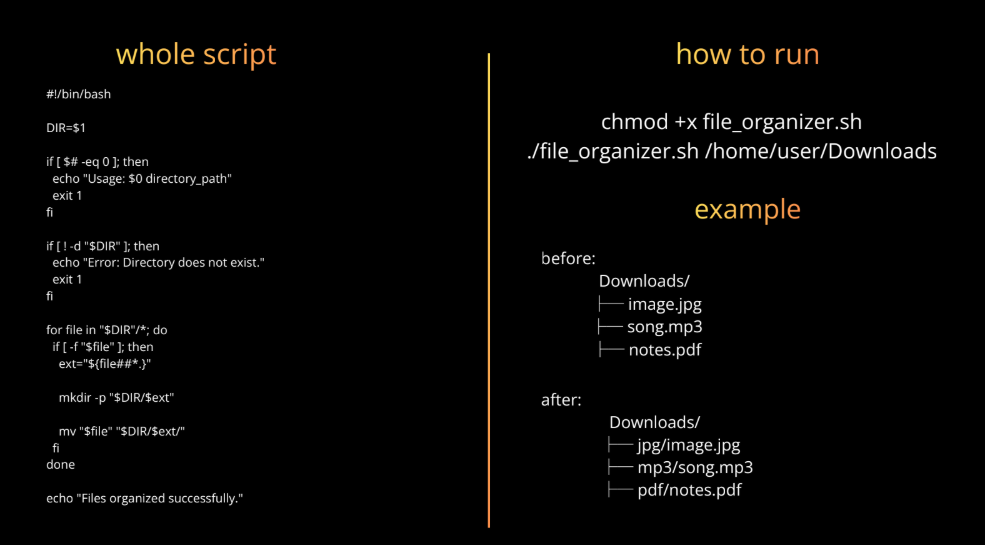

Thses are My first semester project
Security Management System
I developed a Security Management Application to improve safety monitoring and record management. This application helps in managing security-related information such as visitor records, entry-exit logs, and security alerts in an organized digital format. The main objective of this project is to replace manual security record keeping with an efficient and user-friendly digital solution. The system provides a structured interface for storing and retrieving security data quickly. It enhances security operations by reducing paperwork, minimizing errors, and improving data accessibility.
Key Feacture
- Visitor Entry and Exit Management
- Digital Record Storage
- Search and Filter Security
- Real-time Data Handling
- Improved Data Organization
- Secure Information Management
Vist our Website
https://secure-door-pal.lovable.app

The harware componaent we used to display the approval and rejection of the owner on the display using ESP32 and oled dispaly
My role in this project
Designed the structure and features of the security management system. Created effective prompts to generate frontend and backend code. Guided AI tool (Lovable) to build the application as per requirement Reviewed and refined generated code for better functionality Tested and improved user experience
Linux File Organizer (Bash Project)
Developed a Linux-based file management automation tool using Bash scripting to efficiently organize unstructured directories. The project focuses on reducing manual effort by categorizing files into structured folders based on their extensions.
This script takes a directory path as input and automatically scans all files within it. Based on file types (such as images, audio, and documents), it dynamically creates folders and moves each file into its respective category. The script also includes error handling to ensure proper execution when invalid inputs or non-existent directories are provided.
Key Highlights
- Automated file sorting using Bash scripting
- Dynamic folder creation based on file extensions
- Implementation of Linux commands for file handling
- Input validation and error handling
- Improves efficiency and directory organization

Ongoing...